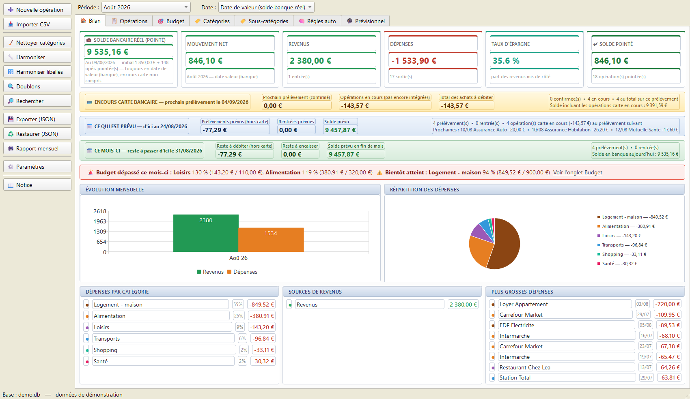
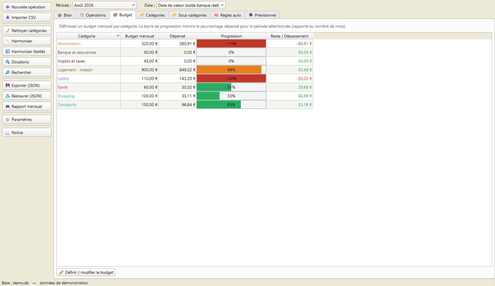
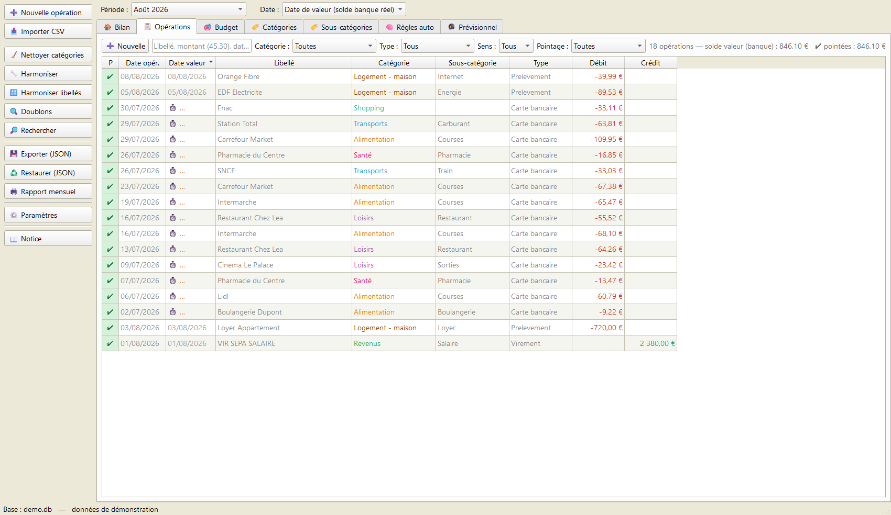
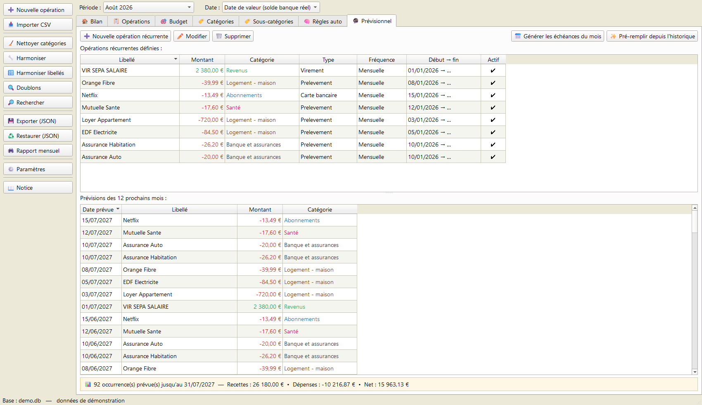

💰 Comptes et Budget
Gérez vos comptes et votre budget personnels, simplement, sur votre PC.
Gérez vos comptes et votre budget personnels, simplement, sur votre PC.




Captures avec des données d'exemple.
Une application de bureau pour suivre vos dépenses et revenus, vous fixer des budgets et garder l'œil sur votre solde réel — sans abonnement, sans compte en ligne, et sans qu'aucune donnée ne quitte votre ordinateur.
Saisie manuelle ou import de vos relevés bancaires CSV (BPCE, Crédit Mutuel, Crédit Agricole et autres banques françaises).
Des règles classent vos opérations toutes seules au fil des imports.
Un budget par catégorie, avec barres de progression vertes / oranges / rouges.
Déclarez vos opérations récurrentes (loyer, salaire, abonnements) et anticipez les mois à venir.
Une synthèse imprimable ou exportable en PDF, mois par mois.
Pointez vos opérations pour retrouver à l'euro près le solde de votre relevé.
.zip.Comptes-Budget.exe.Aucune installation de Python n'est nécessaire. Au premier lancement, l'application vous invite à saisir votre solde de départ.
Configuration requise : Windows 10 ou 11 (64 bits).
Toutes vos données restent sur votre ordinateur, dans un fichier comptes.db à
côté de l'application. Rien n'est envoyé en ligne. Une sauvegarde quotidienne automatique est
créée dans un sous-dossier sauvegardes/.